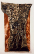
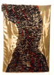
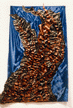
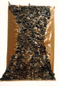

"Broadway Trees"
June Julian's New Trees Shine in Group Show
March 10 - March 28, 1998
Reception: Saturday March 14 6-8 p.m.
MyungSook Lee Gallery
545 Broadway
2nd Floor
New York City 10012
Telephone: 212 334-3361
FAX: 212 334-1322
Hours: Tuesday - Saturday 11 to 6
Artist's Statement
For many years, I have been painting the oldest trees that I can find near my home and in my travels. When I initiated the Web project, "A World Community of Old Trees" as a collaborative art piece in February 1996, I invited the world to join me in celebrating the most extraordinary trees on the planet by sending in imagery, text and multimedia to the Web site. My impulse for the new "Broadway Trees" series was to engage myself with the physical manipulation of actual textiles that I bought downtown on Broadway. I wanted the luscious surfaces to communicate the beautiful fierce vitality shared by trees and all living things. Making these sumptuous pieces was pure pleasure and I am happy to have this opportunity to share them with you.
June Julian
"A World Community of Old Trees"
http://www.nyu.edu/projects/julian/
jj68@nyu.edu
 "Holding Strong"
25"X40" Satin 1997
 "Liquid Scarlet"
28"X40" Satin 1997
 "Hot Sap Rising"
30"X40" Satin 1997
 "Daphne's Dress"
25"X40" Satin 1997
 Return to Main Page
Return to Main Page
Comments
Please sign my guestbook
Sign My Guestbook
 View My Guestbook
View My Guestbook
or send e-mail to: June Julian jj68@nyu.edu
© 1998 - 2003 June Julian
All rights reserved